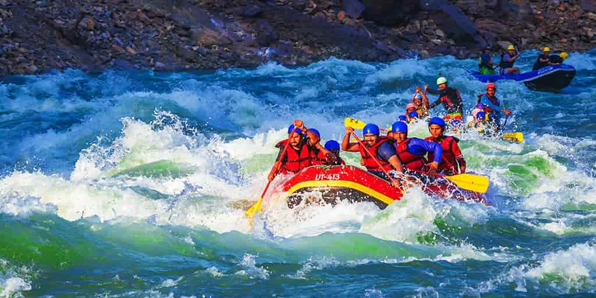
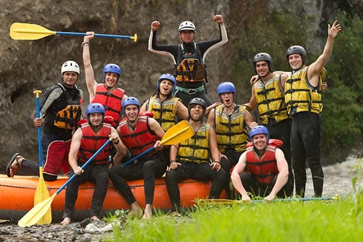
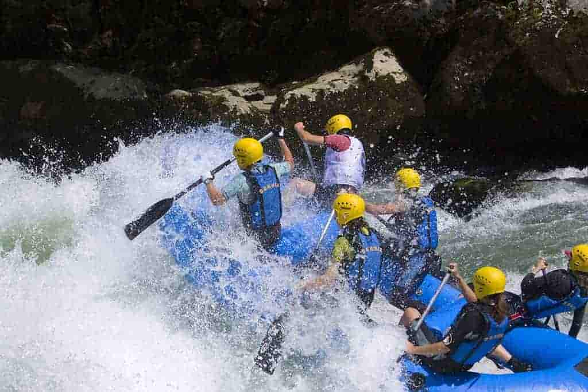
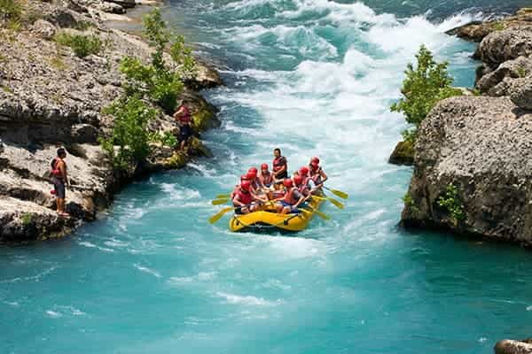
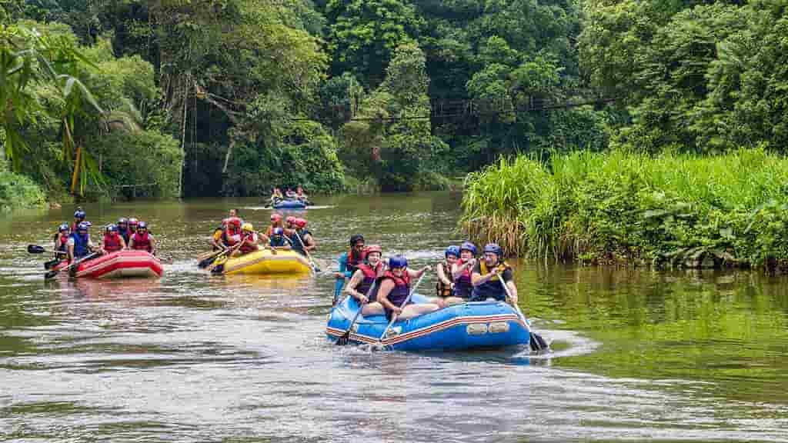
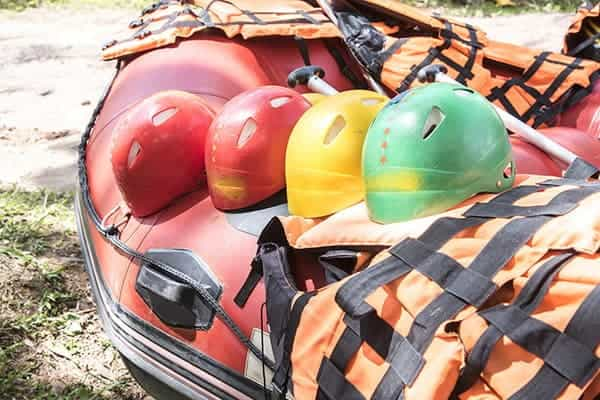
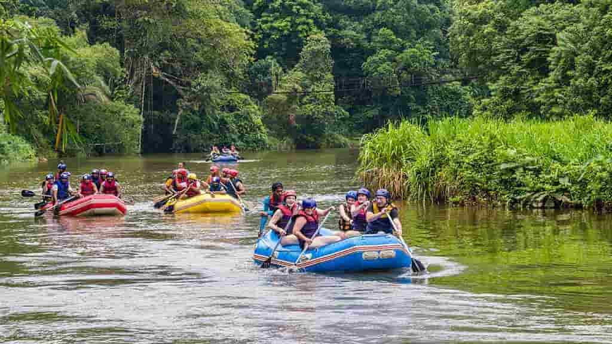
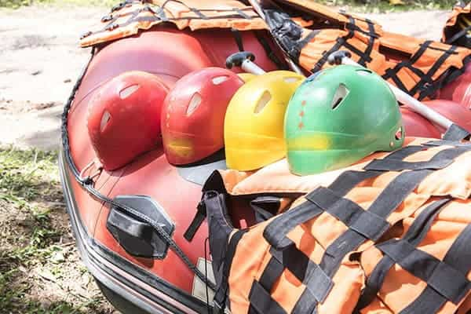

Have you ever felt the need of experience a rush of adrenaline? The need to feel excitement, joy and anxiety all at the same time? Then you have come to the right place! At Mountain Extreme Water Rafting we are experts to deliver experiences that not only makes you feel those emotions but also to enjoy a moment of excitement


Mountain Extreme Water Rafting
History
Founded in 2024 by the Osorio Family. This family has loved doing extreme activites since forever. But most of all, always loved to do extreme activites, like banana rafting, razers on the beach, zip lining, parachute, bungie and a bunch of amazing things that put your emotions on the edge. While they were on their honey moon they tried for the first time the spinner rafting, it was a whole new experience for them and they loved it.
Adventure Awaits You!
  


